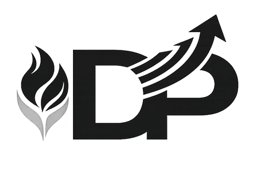

Creo en las personas, en el trabajo bien hecho y en construir relaciones basadas en confianza, respeto y empatía.

Mi marca personal: cercanía humana con liderazgo responsable.
Quiero que me perciban como una persona confiable, empática y cercana, que cuida a su equipo y apoya a los demás, pero que al mismo tiempo es responsable, profesional y capaz de liderar con orden, visión y compromiso.
Mis arquetipos son Cuidador y Gobernante. El Cuidador se refleja en mi forma de escuchar, apoyar y generar confianza. El Gobernante se refleja en mi disciplina, mi necesidad de orden y mi enfoque en resultados sin perder el lado humano.
Habilidades
- Comunicación empática
- Trabajo en equipo
- Liderazgo responsable
- Organización y planificación
Fortalezas
- Empatía genuina
- Honestidad
- Lealtad
- Responsabilidad
Cómo actúo en situaciones reales
- En momentos de crisis con gente que quiero y apoyo, soy el último en perder la cabeza y en abandonar el barco.
- Me definen la empatía y la lealtad: para mí, la confianza se construye y se protege.
- Escucho, me organizo y apoyo en todo lo que haga falta para que el equipo avance.
- Comprendo a las personas y sé cómo actuar con cada una para apoyarlas y ganarme su atención.
- Soy responsable, calmado y trabajador; considero varias ideas y sé trabajar en equipo.
Mi propuesta profesional
Ofrezco una forma de trabajo basada en valores, compromiso y responsabilidad, enfocada en generar confianza y relaciones sólidas a largo plazo. Busco aportar soluciones con una visión humana y profesional, trabajando con disciplina, respeto y orientación al éxito.
Portafolio
Esta sección está visible en el menú según la estructura requerida. En futuras entregas incluiré proyectos, trabajos y resultados relevantes.
Cómo soy como marca
Mi marca personal se construye a partir de una idea simple: crecer profesionalmente sin dejar de ser humano. Para mí, la forma en la que trato a las personas, cómo respondo bajo presión y cómo sostengo la confianza en equipo es lo que define mi reputación.
Mis arquetipos son Cuidador y Gobernante. Como Cuidador, me importa el bienestar del equipo: escucho, apoyo y busco generar un ambiente donde la gente se sienta valorada. Como Gobernante, me enfoco en el orden, la planificación y la responsabilidad: me gusta trabajar con estructura, claridad y metas, cuidando el proceso sin descuidar los resultados.
Actualmente estudio Ingeniería Industrial en la Universidad del Valle de Guatemala. Me interesa fortalecer mi perfil con una visión estratégica, por lo que al graduarme planeo estudiar una maestría en Finanzas. Considero que esa combinación me permitirá tomar decisiones con mayor criterio, analizar mejor los recursos y contribuir con soluciones que sean humanas, eficientes y sostenibles.
En situaciones de crisis, especialmente cuando se trata de personas que aprecio y apoyo, suelo mantener la calma. Soy el último en perder la cabeza y en abandonar el barco. Prefiero escuchar, ordenar ideas, evaluar opciones y aportar claridad para que el equipo avance. Esa forma de actuar es parte central de cómo quiero que se recuerde mi marca: confiable, leal y enfocada en soluciones.
También creo que una marca se demuestra con consistencia. Por eso intento ser responsable, trabajador y abierto a distintas ideas. Me tomo en serio el trabajo en equipo y me esfuerzo por aportar organización, apoyo y criterio. Mi objetivo es que la gente vea en mí a alguien con valores, compromiso y capacidad de liderazgo.
En resumen, quiero que mi marca combine dos cosas: cercanía (confianza, empatía y apoyo real) y dirección (orden, visión, responsabilidad y resultados).
Contacto
Esta sección está visible en el menú según la estructura requerida. En el futuro puedo integrar un formulario real o enlaces de contacto.